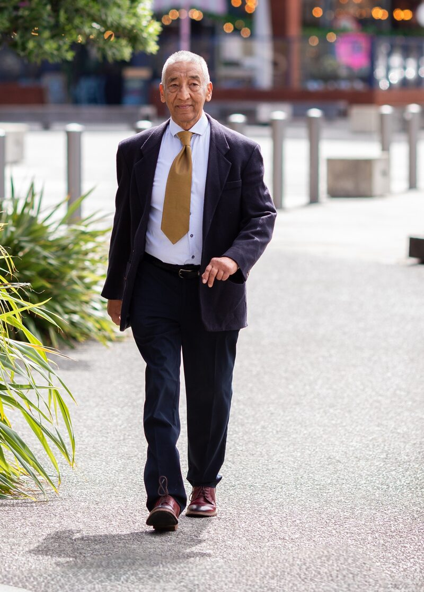

The Long Way Home: What Remittances Really Build
A long-form look at how money sent from abroad reshapes villages in mid-hill Nepal — and what it costs the families who send it.
Writer · Tutor · Translator
Long-form journalism on Nepal, South Asia, and the diaspora — alongside teaching and literary translation, from Wellington, New Zealand.

Soren Neupane grew up in Kathmandu, where an early habit of retelling radio news to his grandparents turned into a lasting fascination with how stories change as they cross languages. He moved to Wellington, New Zealand, where the distance from home sharpened, rather than dulled, his interest in Nepali politics and culture.
He has worked as a reporter and columnist for community publications, taught writing and language to students from primary school to adult learners, and translates literature between Nepali and English — most ambitiously, Astrid Lindgren's Pippi Longstocking into Nepali.
These days he splits his time between long-form journalism on the Nepali diaspora, weekly tutoring sessions, and a slowly growing shelf of translation drafts.
A long-form look at how money sent from abroad reshapes villages in mid-hill Nepal — and what it costs the families who send it.
Dashain celebrated over video calls: how Wellington's Nepali community keeps ritual alive across a six-hour time difference.
On heritage-language loss in second-generation Nepali families, and the weekend schools quietly fighting it.
A profile of three immigrant-run kitchens and what a dumpling can tell you about labour, belonging, and rent.
A weekly small-group workshop for adult migrants, focused on practical writing — emails, CVs, and personal essays — with an emphasis on finding a voice, not just fixing grammar.
One-on-one lessons for second-generation kids and adults who understand Nepali but hesitate to speak it. Built around songs, stories, and family interviews rather than textbooks.
Individual coaching for secondary and university students on essay structure, argument, and exam technique.
A full translation of Astrid Lindgren's classic — wrestling Pippi's wordplay and invented compound words into Nepali that children will actually laugh at.
An ongoing series bringing short fiction and poetry from contemporary Nepali writers to English readers.